Ein Tool, das Wireframes, Screenshots, URLs und Repositories in ein konsistentes Designsystem übersetzt — gebaut mit KI.
Robert Kraus · UX/UI Designer
00 · Vorstellung
Designer. Kein Coder.
Senior UX/UI Designer & UX Design Consultant. SaaS, Cloud-Services, Automotive, Medical Devices, Web. Kann Code oberflächlich lesen, aber nicht schreiben.
01 · Ausgangslage
Software aus dem Prompt — zusammengehalten von Post-its.
KI-generierte Dashboard-Entwürfe, mit Post-its erklärt und ohne Designsystem gebaut — jede Seite sah anders aus.
01 · Ausgangslage
Aus Tempo wird ein Fragment-Labyrinth.
Man startet mit einer kleinen Vision — und Feature um Feature bleibt haften, bis ein Gebäude entsteht, in dem sich niemand mehr zurechtfindet. Kein System, keine Konsistenz.
Abspielen
Klick · nochmal

02 · Der Auslöser
„In 3 Monaten macht das die KI."
Die Ansage der Geschäftsführung: 50 Entwicklerstellen, Designer und Coder bald überflüssig — Features promptet man selbst. Datenschutz und Sicherheit? Für die GF ein Randthema.
03 · Die Reaktion
Aufräumen bei laufendem Betrieb.
Zwei Aufgaben zugleich: fünf Jahre Wildwuchs bändigen und den KI-Input auf ein konsistentes Designsystem bringen. Daraus wurde UIPrism.
04 · Die Idee
Wireframe rein — konsistentes Design raus.
Liest Screenshots, Wireframes und Repositories, nutzt das Repo als Single Source of Truth und synct nach Figma.
05 · Hypothese & Ergebnis
Die Wette: ohne eine Zeile Code baubar.
Als Prototyp — ja.
Als wartbares Produkt — nein.
Mein Denkwandel: Es lag nicht an der Idee, sondern an der Übergabe an mich. Mit KI entsteht schnell Beeindruckendes — aber ohne Code-Verständnis bleibt es fremdgesteuert.
06 · Die Journey (1/2)
Kein Terminal. Alles über die KI.
Bewusst weggelassen, was mich überfordert — Terminal und klassische Dev-Tools. Stattdessen alles über Claude & Claude Code, per MCP an Miro, GitHub und Figma angebunden. Automatisiert, was ging.
06 · Die Journey (2/2)
Alles automatisiert — der Preis ist Blindflug.
Der Entwicklungsprozess liegt komplett bei der KI, ich greife kaum ein. Schnelle Ergebnisse, aber intransparent: unzählige Iterationen, unklare Fehler — und mein eigener Lernfaktor bleibt gering. Genau daher meine Unruhe.
07 · Bauen mit KI · ★ Herzstück
Chat ist das falsche Interface für Designer.
Design-Denken ist visuell und geht in die Breite — Wireframes, Pläne, zunehmende Detailtiefe. Ein Textchat erzwingt eine lineare Abfolge. Genau da liegt der Bruch.
Damit nicht allein: Amelia Wattenberger (GitHub Next) & Nielsen Norman Group argumentieren dasselbe. Es geht um Interface-Passung — nicht darum, dass KI für Designer „unmöglich" wäre.
08 · Vision & Next Steps
Die Idee trägt. Die Umsetzung braucht Code-Tiefe.
Nächster Schritt evtl. Übergabe an Entwickler-Hand; Weg: klein testen → Open Source → bottom-up → Enterprise.
Q&A
Fragen?
1. Wie erlebt ihr das Gefühl, dass die KI schneller baut, als ihr folgen könnt?
2. Würdet ihr ein KI-Projekt je an jemanden mit Code-Skills abgeben — oder nie aus der Hand?